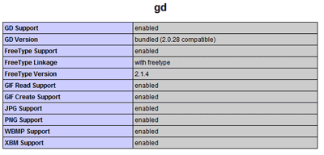

The verification codes feature of TGPX allow you to place images on the gallery submission, partner request, and cheater reporting forms which will contain a word or series of characters that the user must enter in order to submit the form. This will help to reduce the number of spam submissions you receive. This document provides an overview of the verification codes feature of TGPX
Server Requirements
To use the verification codes feature your server will need to have PHP compiled with the GD extension. It is fairly common for servers to have PHP compiled with the GD extension, but if your server does not have PHP configured that way you can ask your server administrator if they will add the GD extension to PHP for you. To check if your server has the GD extension, use the phpinfo() function from the Settings menu in the TGPX control panel. This will display a large amount of information about your server's PHP installation, but you will want to look for a section like this:

If you don't see this section, it means that PHP does not have the GD extension installed. If you do see this section, you should be able to use the verification code features of TGPX.
The code.php Script
The code.php script shipped with TGPX is responsible for generating and displaying the verification code images. This script can use two different methods for displaying the verification codes: with FreeType or without FreeType. The verification codes generated when FreeType is available offer a greater amount of protection as they should be more difficult for automated programs to interpret. The code.php script will automatically determine if FreeType is available and if you have uploaded some True Type Fonts (TTF) for it to use. If you want to ensure that FreeType is being used to generate the verification codes, follow these steps:
- Make sure the GD extension was compiled with FreeType support. Use the instructions in the Server Requirements section to view the output of the phpinfo() function and locate
the section on GD. Look for 'FreeType Support' in that section, which should read 'enabled' if FreeType is available. If you see this, the code.php script will be able to generate
the more advanced verification codes.
- Once you know that FreeType is installed, you will need to upload some TTF fonts to your server. In the General Settings interface of the control panel you have configured
a setting labeled Font Directory. You should place all of your TTF font files in this directory. Make sure you upload these files to your server in binary mode. You can find
hundreds of free TTF fonts at http://www.fontfile.com/
- After you have uploaded some TTF files to the font directory, you will need to test them to make sure that they display properly. To test them, directly access the code.php
script through your browser, passing the exact filename of the TTF font file you want to test. For example, if you uploaded a font file with the name ArialBold.TTF you would access the code.php
script using this format:
-
code.php?ArialBold.TTF
This will display a simple beige image with black letters and numbers. Make sure all of the letters and numbers can be easily read so that your users won't have difficulty determining what letters and numbers to enter for the verification code.
By default, the verification codes generated by the software will be a random sequence of letters and numbers. If you would prefer to use regular words instead (which in most cases will be easier and less frustrating for your users) you can enter a list of words in the file named 'words' in the includes directory of your TGPX installation. TGPX ships with that file already filled with a selection of over 6500 words, but you can add to that if you wish or change it completely to contain words in your own language that will be more familiar to your users. The final thing you need to do is check the Use words file for verification codes option in the General Settings interface.